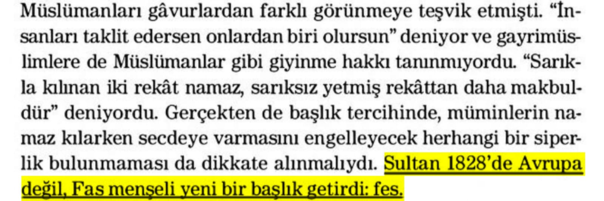
***Bismillahirrahmanirrahim.
Merhaba arkadaşlar bu kanalda
sizlere Kemalistlerin fes hakkında uydurdukları Yunan
başlığı iftirasına cevap vereceğiz.*📕 Sarık ve İstanbulin - Jean François Solnon - Sayfa 366
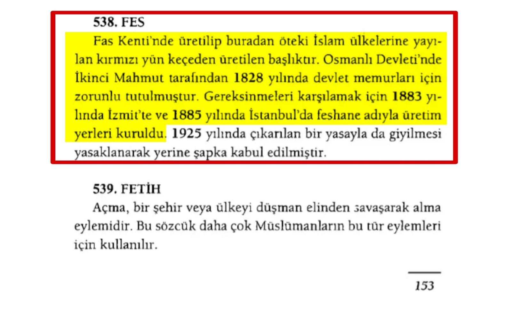
📕 Timur Bilgiç - Tarih Terimleri Sözlüğü - Sayfa 153
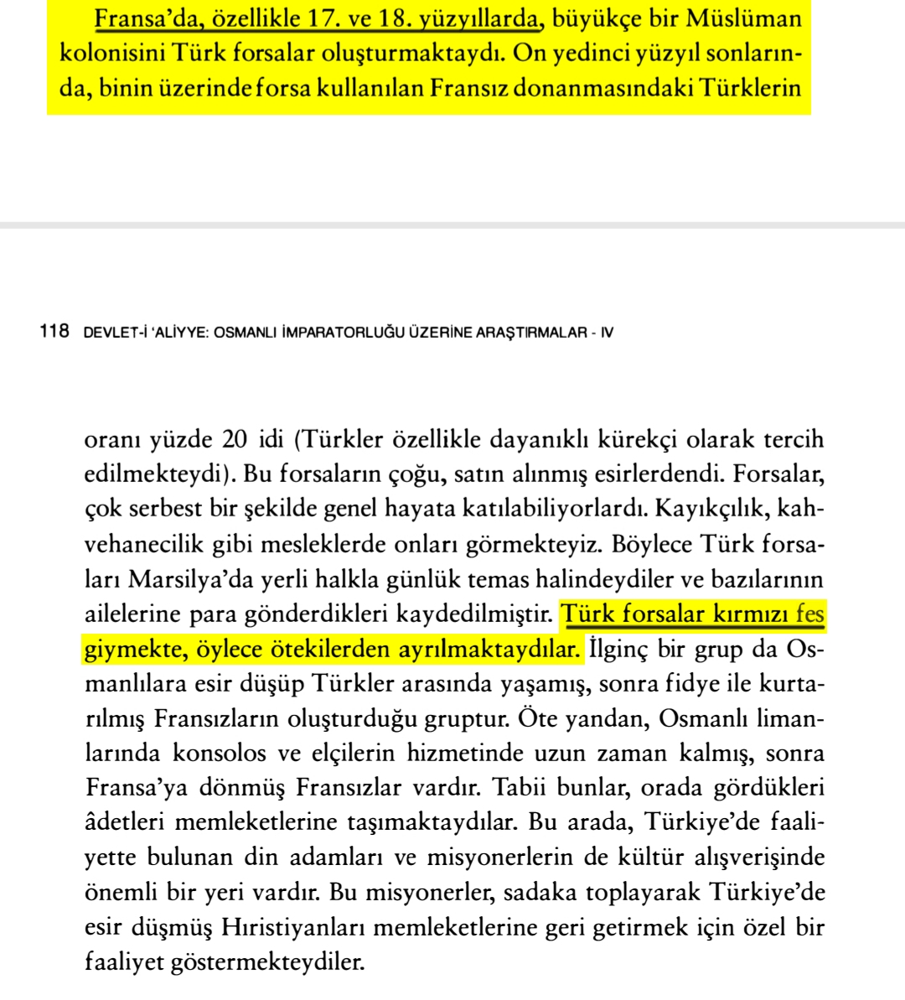
- **Osmanlı'nın fes ile buluşması.📕 Halil İnalcık - Devlet-i Aliyye Cilt 4 - Sayfa 117-118
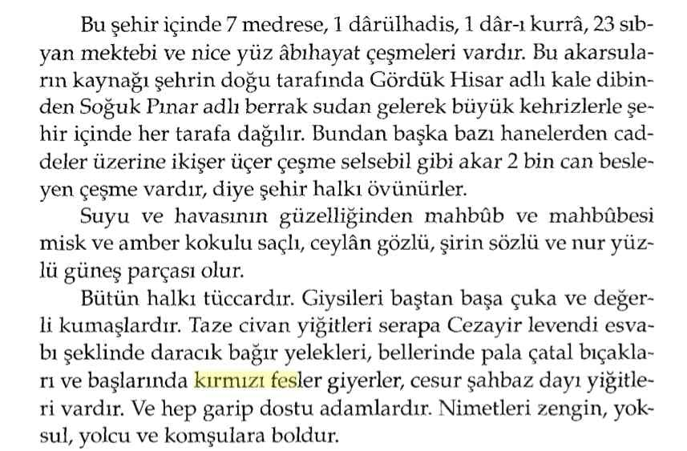
📕 Günümüz Türkçesiyle Evliya Çelebi'nin Seyahatnamesi Sayfa 69
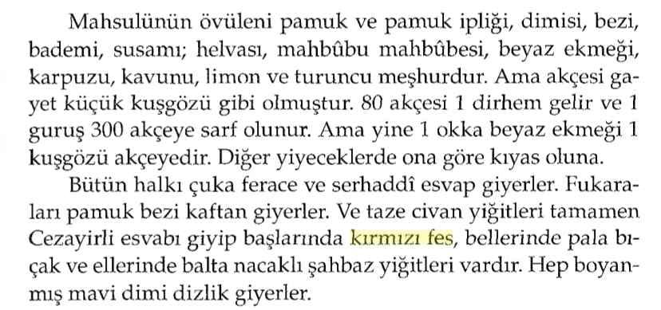
📕 Günümüz Türkçesiyle Evliya Çelebi'nin Seyahatnamesi Sayfa 175
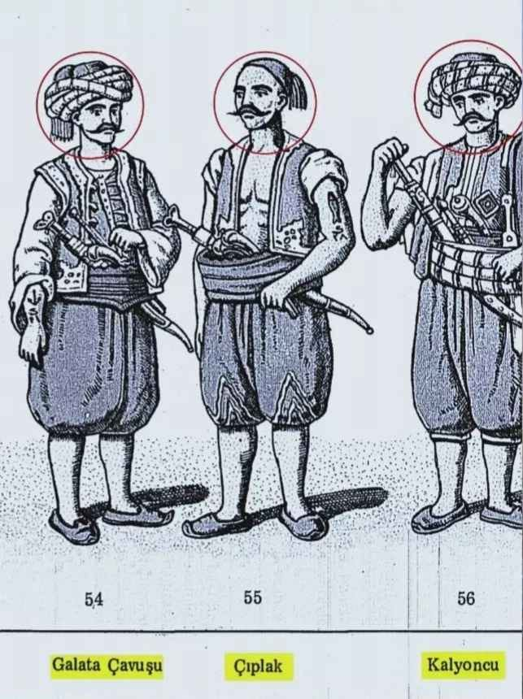
📕 Mahmut Şevket Paşa - Osmanlı Askeri Teşkilatı ve Kıyafeti - Sayfa 172-173
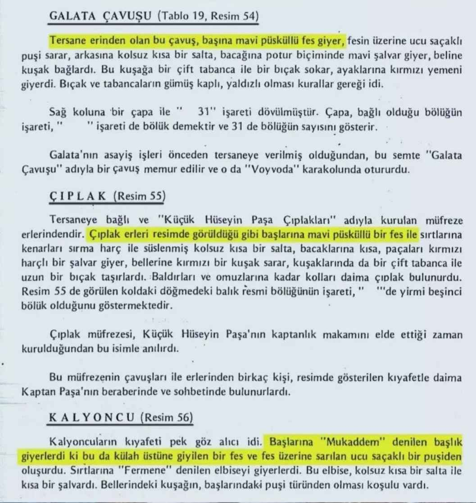
📕 Mahmut Şevket Paşa - Osmanlı Askeri Teşkilatı ve Kıyafeti - Sayfa 172-173
- 📌 Kaptan-ı Deryadaki bu üç asker heyeti 16-17. yy'da daha fes kanunu gelmeden öncede başlarına fes takıyolardı.- Bunlardan anlıyoruz ki anadolu halkı fese yabancı değildi. Fesi ilk kez II. Mahmud Han getirmedi fes zaten kullanılıyordu, II. Mahmud Han sadece kanunlaştırmıştır.

- **Ali Şükrü Bey'in Fes hakkında mecliste söylediği sözler📕 TBMM Zabıt Ceridesi Cilt 9 İçtima 16 - 04.04.1337 - Sayfa 351
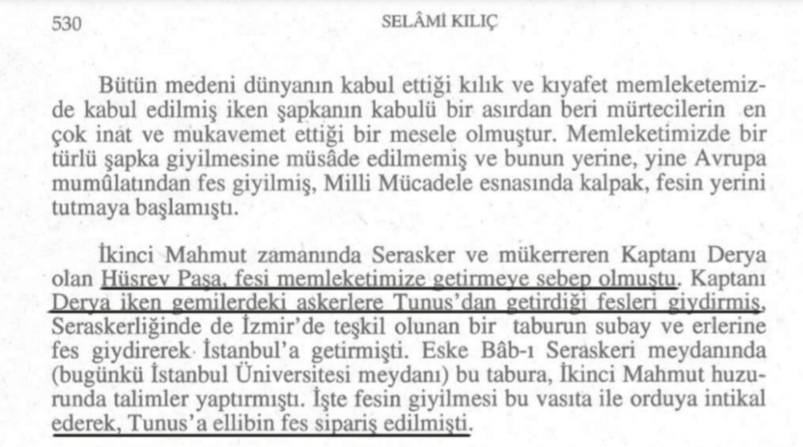
- **Osmanlı'nın ilk fes siparişi nereden olmuştu📕 Selâmi Kılıç - Şapka Meselesi Ve Kılık Kıyafet İnkılabı, Atatürk Yolu - Cilt 4 - Sayı 16 - Sayfa 530
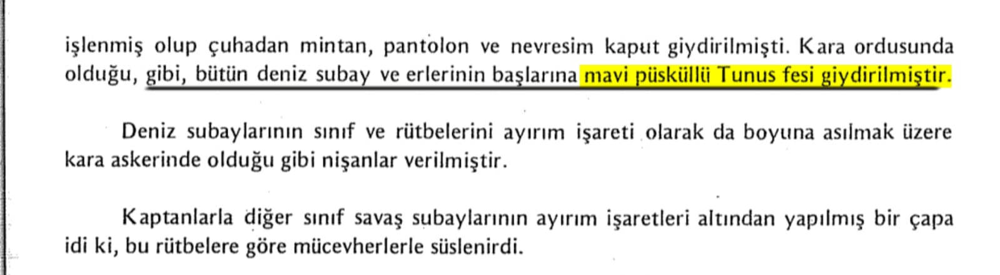
📕 Mahmut Şevket Paşa - a.g.e Sayfa 105
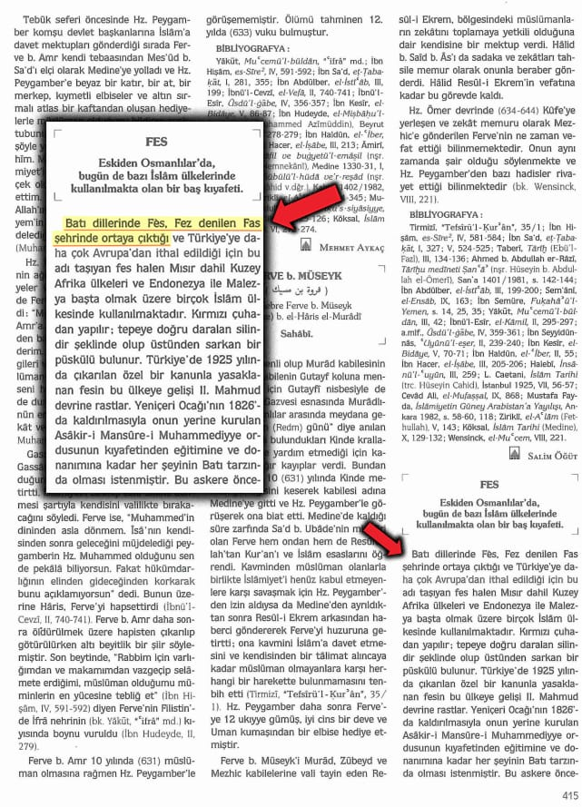
📌 Fes Yunanlılardan mı Alındı?:📚 Hülya Tezcan, Fes, İslam Ansiklopedisi, Cilt 12, s. 415
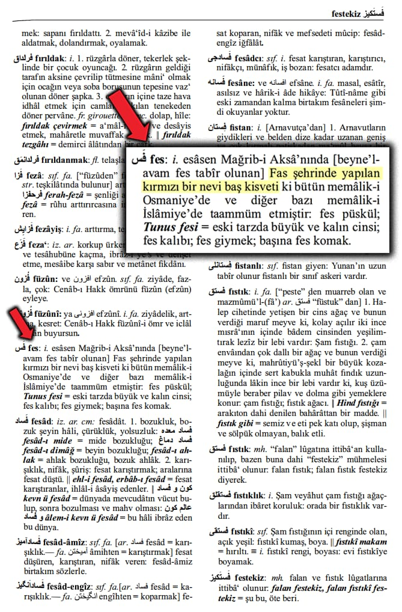
📚 Şemseddin Sami, Kamus-ı Türki, s. 773
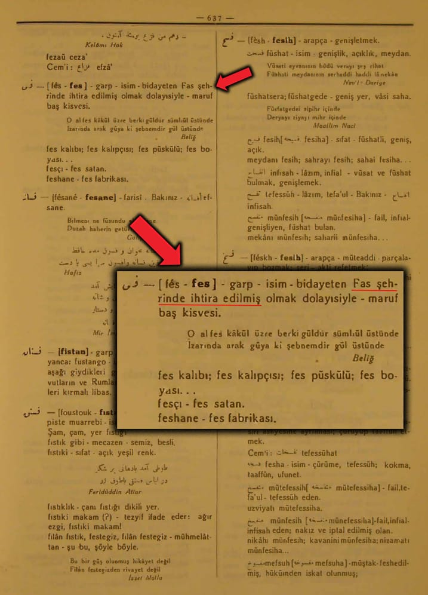
📚 Hüseyin Kazım Kadri, Türk Lugati, Cilt 3, s. 637
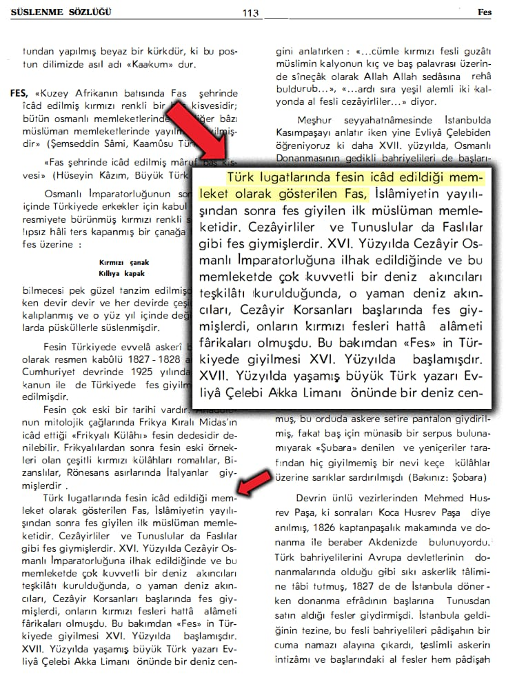
📚 Reşad Ekrem Koçu, Türk Giyim Kuşam Ve Süslenme Sözlüğü, s. 113
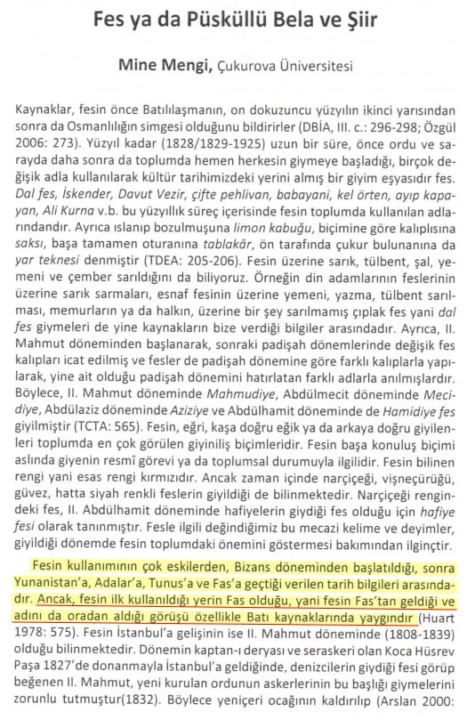
📚 Mine Mengi, Fes Ya Da Püsküllü Bela ve Şiir, s. 229
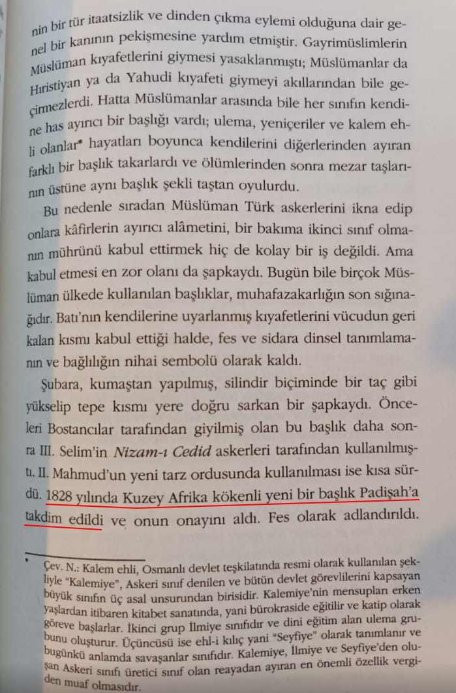